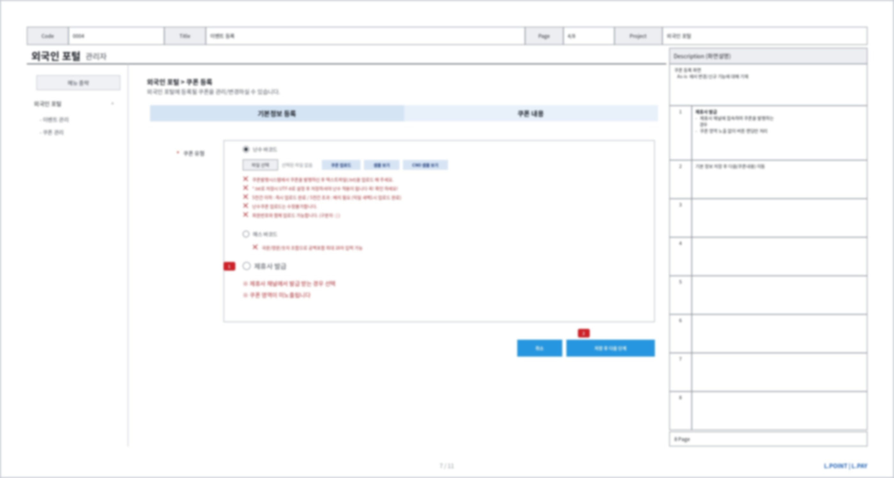
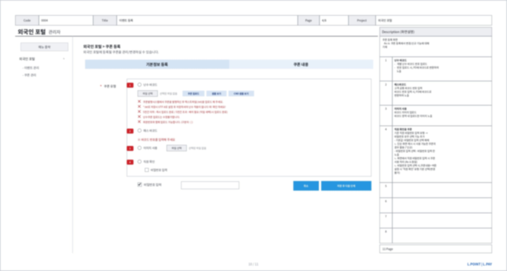
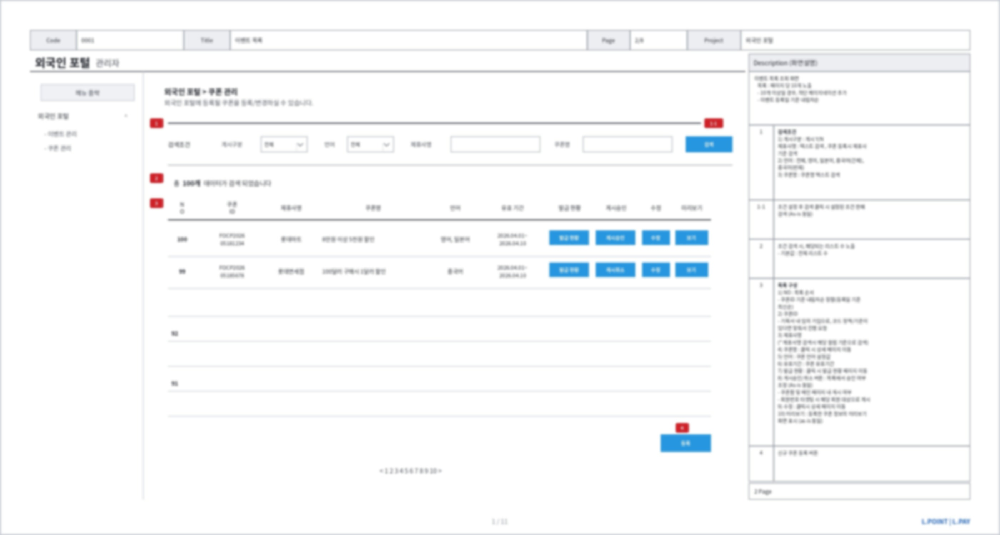
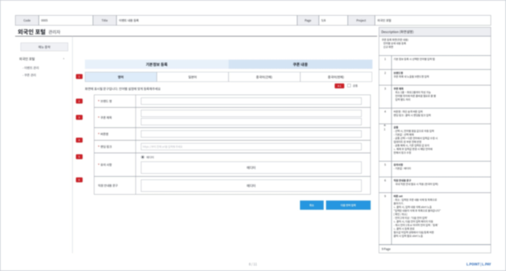
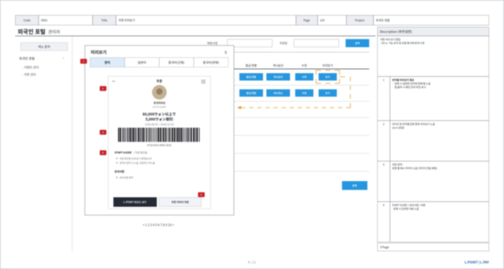
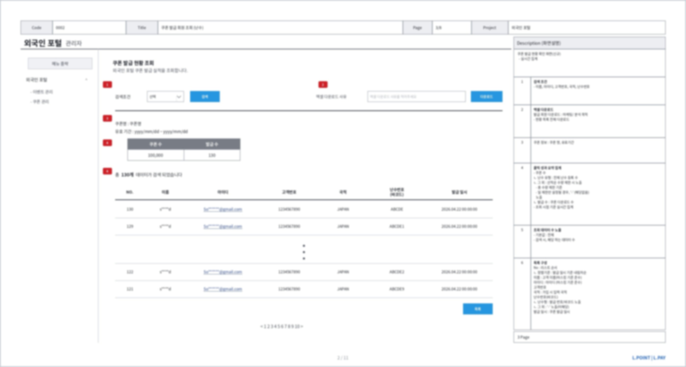

롯데멤버스
외국인 포털 운영 어드민 구축
쿠폰·이벤트를 올리려면 매번 개발 요청이 필요한 구조였습니다. 쿠폰 데이터 모델과 다국어 저장 구조를 정의해, 현업이 직접 운영하는 관리자 화면을 만들었습니다.
문제 — 열어놓고 운영을 남겨두면 멈춥니다
외국인 고객 대상 쿠폰·이벤트를 등록하거나 수정하거나 게시하려면 매번 개발 요청이 필요했습니다. 요청이 쌓이면 개발 조직의 일정에 종속되고, 방치하면 포털은 콘텐츠가 갱신되지 않는 정적 페이지로 전락합니다.
앞서 구독 서비스에서 수기 운영의 부담을 이미 겪었습니다. 같은 문제를 반복하지 않기 위해 고객 화면과 어드민을 하나의 범위로 묶어 설계했습니다. 운영을 나중 과제로 떼어두면 결국 개발 요청으로 돌아옵니다.
설계 ① 쿠폰 데이터 모델



설계 ② 다국어는 번역이 아니라 저장 구조의 문제
영어 · 일본어 · 중국어 간체 · 중국어 번체 4개 언어를 다뤄야 했습니다. 번역 텍스트를 넣을 칸을 네 개 만드는 문제로 보이지만, 실제로는 저장 구조를 정하는 문제였습니다.


설계 ③ 통제는 규정이 아니라 기능으로

개발 범위를 문서로 합의했습니다
화면정의서 11종을 작성해 개발 범위를 확정하고 개발 조직과 합의했습니다. 쿠폰 목록, 등록(온라인·오프라인), 유형별 분기, 언어별 내용 등록, 미리보기, 발급 회원 조회, 이벤트 클릭 회원 조회까지 포함합니다.
범위를 말로 합의하면 개발 중에 계속 늘어납니다. 문서로 고정해야 무엇이 이번 범위이고 무엇이 다음인지가 서로 같아집니다. 이후 일정 관리와 오픈, 오픈 후 이슈 대응까지 맡았습니다.
성과와 배움
반복 개발 요청이 사라졌습니다. 쿠폰 등록, 게시 승인, 발급 집계를 현업이 직접 처리합니다. 포털이 정적 페이지로 굳는 경로를 막았습니다.
4개 언어를 하나의 등록 흐름으로 처리하는 저장 구조를 확보했습니다. 언어가 추가돼도 같은 틀에 들어갑니다.
개인정보 반출 이력과 마스킹 기준을 기능으로 고정했습니다. 운영 재량에 의존하지 않는 통제입니다.
고객 화면과 어드민은 한 범위입니다. 운영을 남겨두면 결국 개발 요청이 반복되고 서비스가 멈춥니다. 처음부터 같이 설계해야 합니다.
다국어는 번역이 아니라 저장 구조의 문제입니다. 언어별 필드를 분리하고 언어 무관 값은 공통 속성으로 상속시키는 것이 핵심이었습니다.
통제는 규정이 아니라 기능으로. 반출 사유 필수 입력과 마스킹을 화면에 박아 운영자 재량을 제거했습니다.